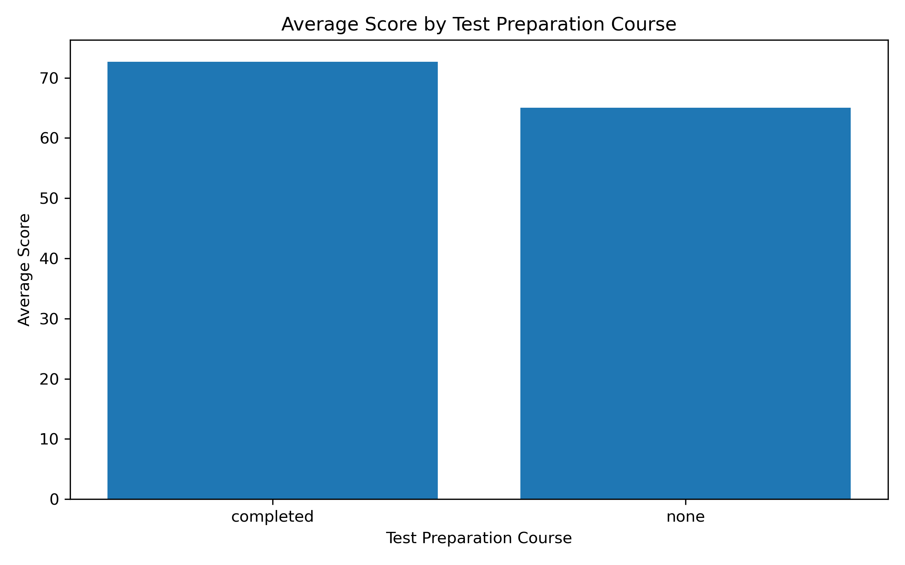
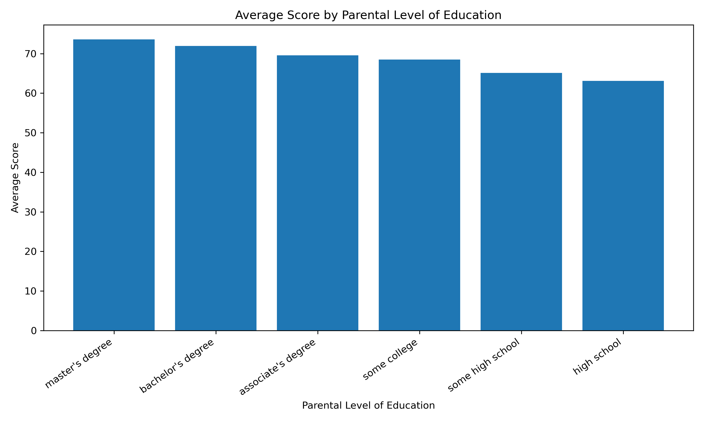
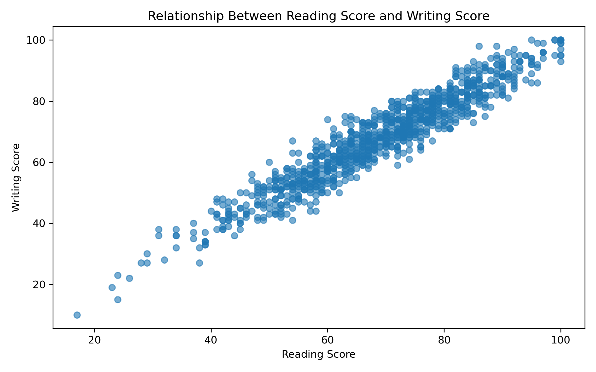
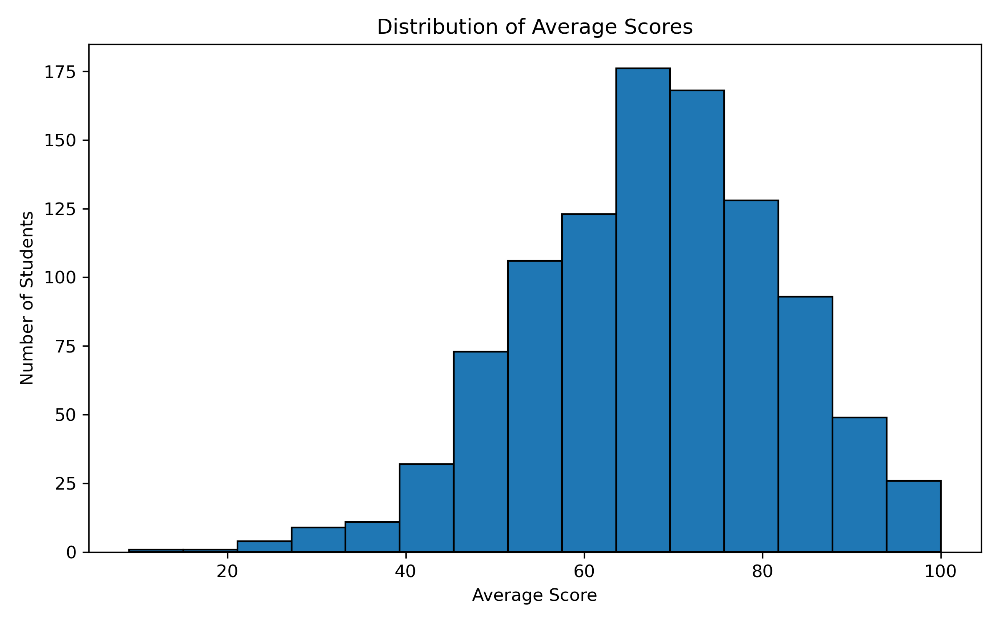
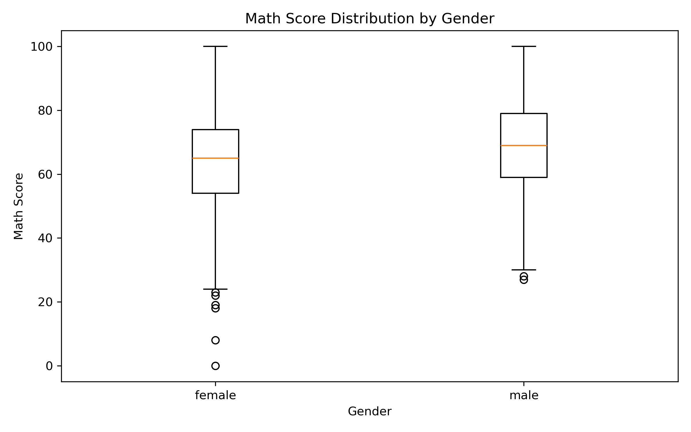
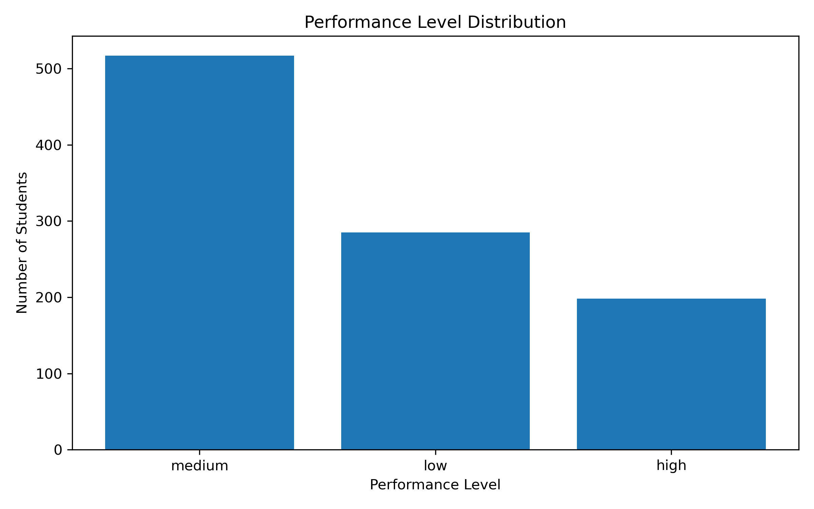

Python Data Analysis Project using Pandas, NumPy, and Matplotlib
Name: Rifat Bhuiyan
ID: 22-49356-3
Project: Student Performance Analysis
Course: Programming in Python
This project analyzes student performance data using Python. The main goal of this project is to understand how different factors such as gender, parental education level, lunch type, and test preparation course affect student exam scores.
The dataset contains student scores in math, reading, and writing. Using this dataset, the project performs data cleaning, feature engineering, statistical analysis, and visualization.
The dataset includes student information and exam scores. It is used to analyze student academic performance based on different social and educational factors.
The project was implemented using Python in VS Code. The dataset was first loaded using Pandas. Then missing values and duplicate values were checked. New columns such as average score and performance level were created for better analysis.
StudentsPerformance.csv - Original datasetstudent_analysis.py - Main Python analysis codecleaned_students_performance.csv - Cleaned datasetanalysis_results.txt - Analysis output filefigures - Folder containing saved chartsindex.html - Project live page for GitHub PagesChart 1: Test Preparation vs Average Score

Chart 2: Parental Education vs Average Score

Chart 3: Reading Score vs Writing Score

Chart 4: Average Score Distribution

Chart 5: Math Score by Gender Boxplot

Chart 6: Performance Level Distribution

From this project, student performance can be analyzed more clearly using Python data analysis techniques. The charts help to understand the impact of test preparation, parental education, gender, and score distribution. This project shows how Python can be used for cleaning data, analyzing information, and presenting results visually.